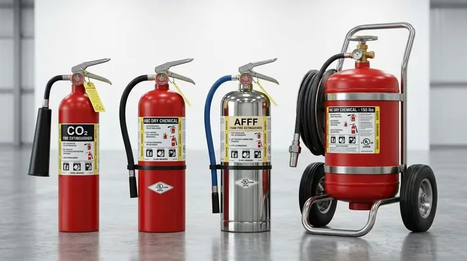

<!-- SECCIÓN 1: INTRO -->
<section class="ol-art-section">
<h2>Por qué el catálogo de MESECI merece análisis técnico detallado</h2>
<p>
Cuando un responsable de protección civil, un ingeniero de proyectos o un gerente de planta necesita especificar equipo contra incendios, la primera pregunta no es de dónde comprar sino qué comprar. La respuesta correcta depende del tipo de riesgo, la clase de fuego probable, la normativa aplicable y las restricciones de instalación del sitio.
</p>
<p>
MESECI se ha posicionado como proveedor de referencia en el mercado metropolitano de México en parte porque su catálogo cubre la mayor parte de los escenarios de riesgo posibles: desde un extintor para una pequeña oficina hasta un sistema integral de supresión para una sala de servidores o un almacén de productos químicos. Este artículo detalla técnicamente ese catálogo, con especificaciones que facilitan la preselección antes de la visita técnica.
</p>
<div class="ol-art-callout" style="border-color: var(--blog-accent);">
<strong>Nota importante sobre especificaciones</strong>
<p>Las especificaciones presentadas en este artículo son de referencia técnica general. Las capacidades, modelos y marcas exactas disponibles pueden variar según inventario y temporada. Siempre solicite la cotización actualizada directamente a MESECI para su proyecto específico.</p>
</div>
</section>
<!-- SECCIÓN 2: EXTINTORES EN DETALLE -->
<section class="ol-art-section">
<h2>Extintores portátiles: el catálogo completo certificado NOM-154</h2>
<p>
La línea de extintores es el producto más amplio del catálogo de MESECI. La profundidad de línea —tipos de agente, capacidades, materiales de cilindro— permite especificar el equipo correcto para prácticamente cualquier tipo de ocupación o riesgo.
</p>
<h3>Extintores de polvo químico seco ABC</h3>
<div class="ol-art-product-block">
<h4>Polvo Químico Seco ABC — Usos generales</h4>
<p><strong>Agente:</strong> Monofosfato de amonio (polvo ABC)</p>
<p><strong>Clases de fuego:</strong> A (sólidos combustibles), B (líquidos inflamables), C (equipos eléctricos energizados)</p>
<p><strong>Capacidades disponibles:</strong> 1, 2.5, 4.5, 6, 9, 12, 25, 50 kg</p>
<p><strong>Presión de operación:</strong> 10–15 bar (según modelo)</p>
<p><strong>Temperatura de operación:</strong> −20°C a +60°C</p>
<p><strong>Certificación:</strong> NOM-154-SCFI-2005 vigente</p>
<p><strong>Notas técnicas:</strong> El polvo ABC es el agente de mayor versatilidad pero deja residuo sólido difícil de limpiar. No recomendado para equipos electrónicos sensibles. Requiere recarga anual y agitación mensual (NOM-154/NFPA 10).</p>
</div>
<h3>Extintores de CO₂</h3>
<div class="ol-art-product-block">
<h4>Dióxido de Carbono (CO₂) — Riesgos eléctricos y tecnológicos</h4>
<p><strong>Agente:</strong> CO₂ líquido en cilindro de alta presión</p>
<p><strong>Clases de fuego:</strong> B (líquidos inflamables), C (equipos eléctricos)</p>
<p><strong>Capacidades disponibles:</strong> 2.5, 5, 10, 15 kg (cilindro de acero sin costura)</p>
<p><strong>Presión de servicio:</strong> 58 bar a 21°C</p>
<p><strong>Temperatura de operación:</strong> −20°C a +60°C</p>
<p><strong>Certificación:</strong> NOM-154-SCFI / prueba hidrostática cada 5 años</p>
<p><strong>Notas técnicas:</strong> No deja residuo. No conduce electricidad (dieléctrico). La bocina de descarga se enfría a −80°C: usar con guantes de protección. No eficaz en fuegos Clase A. En espacios confinados, genera riesgo de asfixia al personal.</p>
</div>
<h3>Extintores de agua presurizada</h3>
<div class="ol-art-product-block">
<h4>Agua Presurizada — Fuegos Clase A</h4>
<p><strong>Agente:</strong> Agua presurizada con propelente (aire o nitrógeno)</p>
<p><strong>Clases de fuego:</strong> A (sólidos combustibles: papel, madera, textiles)</p>
<p><strong>Capacidades disponibles:</strong> 6, 9 L</p>
<p><strong>Presión de operación:</strong> 8–10 bar</p>
<p><strong>Temperatura de operación:</strong> +5°C a +60°C (no usar bajo cero: congela)</p>
<p><strong>Certificación:</strong> NOM-154-SCFI</p>
<p><strong>Notas técnicas:</strong> Mayor penetración en materiales porosos que el polvo. No usar en fuegos B o C. No recomendado en zonas de clima frío sin aditivo anticongelante. Inspección visual mensual del nivel de agua.</p>
</div>
<h3>Extintores de espuma AFFF</h3>
<div class="ol-art-product-block">
<h4>Espuma AFFF — Líquidos inflamables</h4>
<p><strong>Agente:</strong> Concentrado AFFF (Aqueous Film Forming Foam) al 3% o 6%</p>
<p><strong>Clases de fuego:</strong> A (sólidos) y B (líquidos inflamables, gasolina, solventes)</p>
<p><strong>Capacidades disponibles:</strong> 6, 9 L portátil; sistemas fijos de mayor capacidad</p>
<p><strong>Normativa:</strong> NOM-154-SCFI / NFPA 11</p>
<p><strong>Notas técnicas:</strong> La película de espuma sella la superficie del líquido impidiendo revaporización. Más efectivo que el polvo en superficies de combustible abiertas. No usar en fuegos Clase C. Requiere enjuague completo de superficies metálicas tras su uso.</p>
</div>
<h3>Extintores de agente limpio (HFC / FK)</h3>
<div class="ol-art-product-block">
<h4>Agente Limpio FM-200 / Novec 1230 — Protección de equipos críticos</h4>
<p><strong>Agentes disponibles:</strong> HFC-227ea (FM-200) y FK-5-1-12 (Novec 1230 / 3M)</p>
<p><strong>Clases de fuego:</strong> A, B, C</p>
<p><strong>Capacidades disponibles:</strong> 2.5, 4.5, 6 kg</p>
<p><strong>Normativa:</strong> NOM-154-SCFI / NFPA 2001</p>
<p><strong>Ventajas clave:</strong> Sin residuo. No conduce electricidad. No daña equipos electrónicos. NOAEL (nivel sin efectos adversos observables) ≥ 9% para FM-200 y ≥ 10% para Novec 1230.</p>
<p><strong>Notas técnicas:</strong> La opción premium para salas de servidores (CPD), museos, archivos, subestaciones eléctricas y áreas con equipo electrónico de alto valor. El costo por kg es notablemente superior al CO₂. Novec 1230 tiene Potencial de Calentamiento Global (GWP) significativamente menor que FM-200.</p>
</div>
<h3>Extintores Clase K</h3>
<div class="ol-art-product-block">
<h4>Acetato de Potasio Clase K — Cocinas comerciales</h4>
<p><strong>Agente:</strong> Solución acuosa de acetato de potasio</p>
<p><strong>Clases de fuego:</strong> K (aceites y grasas animales/vegetales a alta temperatura)</p>
<p><strong>Capacidades disponibles:</strong> 6, 10 L</p>
<p><strong>Normativa:</strong> NOM-154-SCFI / NFPA 10 / UL 711</p>
<p><strong>Notas técnicas:</strong> Obligatorio en cocinas industriales con freidoras, sartenes volcables y superficies de cocción con aceite. El agente actúa por saponificación (convierte la grasa en jabón, selando la superficie). Usar SIEMPRE como complemento de un sistema fijo de supresión de campana (Ansul o similar). No usar en fuegos A, B o C.</p>
</div>
<!-- TABLA RESUMEN EXTINTORES -->
<h3>Tabla comparativa: extintores MESECI por tipo</h3>
<table class="ol-art-spec-table">
<thead>
<tr>
<th>Agente</th>
<th>Clases</th>
<th>Capacidad rango</th>
<th>Deja residuo</th>
<th>Seguro en equipos electrónicos</th>
</tr>
</thead>
<tbody>
<tr>
<td>Polvo ABC</td>
<td>A, B, C</td>
<td>1–50 kg</td>
<td>Sí (polvo)</td>
<td>No recomendado</td>
</tr>
<tr>
<td>CO₂</td>
<td>B, C</td>
<td>2.5–15 kg</td>
<td>No</td>
<td>Sí</td>
</tr>
<tr>
<td>Agua</td>
<td>A</td>
<td>6–9 L</td>
<td>Sí (agua)</td>
<td>No</td>
</tr>
<tr>
<td>Espuma AFFF</td>
<td>A, B</td>
<td>6–9 L</td>
<td>Sí (espuma)</td>
<td>No</td>
</tr>
<tr>
<td>Agente limpio FM-200</td>
<td>A, B, C</td>
<td>2.5–6 kg</td>
<td>No</td>
<td>Sí</td>
</tr>
<tr>
<td>Novec 1230</td>
<td>A, B, C</td>
<td>2.5–6 kg</td>
<td>No</td>
<td>Sí (GWP bajo)</td>
</tr>
<tr>
<td>Clase K</td>
<td>K</td>
<td>6–10 L</td>
<td>Sí (jabón)</td>
<td>No</td>
</tr>
</tbody>
</table>
</section>
<!-- SECCIÓN 3: ROCIADORES -->
<section class="ol-art-section">
<h2>Sistemas de rociadores automáticos: catálogo NFPA 13 de MESECI</h2>
<p>
Los rociadores automáticos son el sistema de control de incendio más efectivo para la mayoría de las ocupaciones. Cuando se activan, el 90% de los incendios en edificios con sprinklers se controlan o extinguen con la descarga de un solo rociador. MESECI distribuye rociadores y componentes de sistema en todas las configuraciones definidas por NFPA 13.
</p>
<h3>Tipos de rociadores por orientación y patrón de descarga</h3>
<div class="ol-art-product-block">
<h4>Rociador Pendente (Pendent Sprinkler)</h4>
<p><strong>Instalación:</strong> Colgante desde tubería en plafón o losa</p>
<p><strong>Patrón de descarga:</strong> Hemisférico hacia abajo — cubre el área bajo el rociador</p>
<p><strong>Aplicaciones:</strong> Oficinas, comercios, hoteles, hospitales, cualquier espacio con cielo raso</p>
<p><strong>Temperatura de activación disponible:</strong> 57°C (rojo), 68°C (naranja), 79°C (amarillo), 93°C (verde), 141°C (azul), 182°C (morado)</p>
<p><strong>K-factor:</strong> K5.6 a K25.2 según modelo y densidad de diseño</p>
<p><strong>Norma:</strong> NFPA 13 / UL Listed</p>
</div>
<div class="ol-art-product-block">
<h4>Rociador Montante (Upright Sprinkler)</h4>
<p><strong>Instalación:</strong> Montado hacia arriba desde tubería, deflector en posición vertical superior</p>
<p><strong>Patrón de descarga:</strong> Hemisférico hacia arriba y luego hacia abajo por el deflector</p>
<p><strong>Aplicaciones:</strong> Bodegas sin cielo raso, almacenes con estantería, instalaciones industriales expuestas</p>
<p><strong>Temperatura de activación:</strong> Misma gama que pendente</p>
<p><strong>Norma:</strong> NFPA 13 / UL Listed</p>
</div>
<div class="ol-art-product-block">
<h4>Rociador de Respuesta Rápida (Quick Response — QR)</h4>
<p><strong>Característica principal:</strong> Elemento de detección (bulbo o fusible) de respuesta térmica RTI ≤ 50 (m·s)^½</p>
<p><strong>Activación:</strong> 15–30% más rápida que respuesta estándar ante incremento de temperatura</p>
<p><strong>Aplicaciones:</strong> Hoteles, hospitales, edificios de vivienda, escuelas, centros comerciales — cualquier ocupación con alta densidad de personas</p>
<p><strong>Norma:</strong> NFPA 13 / UL Listed / FM Approved</p>
<p><strong>Notas:</strong> NFPA 13 exige QR en ocupaciones de grupo I y II con techo liviano. Reducción del daño por activación más temprana que controla el fuego en etapa inicial.</p>
</div>
<div class="ol-art-product-block">
<h4>Rociador ESFR (Early Suppression Fast Response)</h4>
<p><strong>Característica principal:</strong> Alta densidad de descarga para suprimir (no solo controlar) incendios en almacenes de alto rack</p>
<p><strong>K-factor:</strong> K14.0 o K25.2 (caudal muy alto)</p>
<p><strong>Aplicaciones:</strong> Almacenes con estantería de más de 3 metros, bodegas de distribución, centros de logística</p>
<p><strong>Ventaja operacional:</strong> Elimina la necesidad de rociadores en rack intermedios, simplificando la instalación y reduciendo el costo total del sistema</p>
<p><strong>Requisito:</strong> Presión de trabajo más alta — requiere verificación de la red de suministro y la bomba</p>
<p><strong>Norma:</strong> NFPA 13 / UL Listed / FM Approved</p>
</div>
<div class="ol-art-product-block">
<h4>Rociador de Pared Lateral (Sidewall Sprinkler)</h4>
<p><strong>Instalación:</strong> Horizontal desde pared, descarga en abanico hacia el centro del espacio</p>
<p><strong>Aplicaciones:</strong> Pasillos, cuartos de hotel, áreas donde el plafón no permite tubería central</p>
<p><strong>Limitaciones:</strong> Área de cobertura más reducida — requiere espaciado más cerrado en pasillos largos</p>
<p><strong>Norma:</strong> NFPA 13 / UL Listed</p>
</div>
<!-- TABLA ROCIADORES -->
<h3>Tabla de comparación: tipos de rociador MESECI</h3>
<table class="ol-art-spec-table">
<thead>
<tr>
<th>Tipo</th>
<th>RTI</th>
<th>Orientación</th>
<th>Cobertura máx. (NFPA 13)</th>
<th>Aplicación principal</th>
</tr>
</thead>
<tbody>
<tr>
<td>Pendente estándar</td>
<td>80–300 (m·s)^½</td>
<td>Colgante</td>
<td>20.9 m² (ligero peligro)</td>
<td>Oficinas, comercios</td>
</tr>
<tr>
<td>Montante estándar</td>
<td>80–300 (m·s)^½</td>
<td>Vertical</td>
<td>20.9 m² (ligero peligro)</td>
<td>Bodegas industriales</td>
</tr>
<tr>
<td>Respuesta rápida (QR)</td>
<td>≤ 50 (m·s)^½</td>
<td>Pend. o mont.</td>
<td>20.9 m²</td>
<td>Hospitales, hoteles</td>
</tr>
<tr>
<td>ESFR</td>
<td>≤ 28 (m·s)^½</td>
<td>Pendente</td>
<td>9.3 m² (alto rack)</td>
<td>Almacenes rack</td>
</tr>
<tr>
<td>Pared lateral</td>
<td>≤ 50 (m·s)^½</td>
<td>Horizontal</td>
<td>18.6 m²</td>
<td>Pasillos, cuartos hotel</td>
</tr>
</tbody>
</table>
<h3>Componentes de sistema de rociadores disponibles en MESECI</h3>
<p>
Además de los rociadores, MESECI suministra los componentes necesarios para la instalación completa del sistema:
</p>
<ul>
<li><strong>Válvulas de control (OS&Y o mariposa con supervisión):</strong> Para seccionar zonas del sistema sin interrumpir la protección total.</li>
<li><strong>Válvulas de alarma (wet alarm valve):</strong> Activan la alarma hidráulica (campana de agua o gong) cuando fluye agua al sistema.</li>
<li><strong>Válvulas de diluvio (deluge):</strong> Para sistemas de diluvio en riesgos de combustión rápida.</li>
<li><strong>Válvulas de acción previa (preaction):</strong> Para CPD y áreas con riesgo de descarga accidental indeseable.</li>
<li><strong>Cámaras de inspección y prueba (inspector's test & drain):</strong> Para verificar el funcionamiento del sistema sin activar los rociadores.</li>
<li><strong>Colgantes y soportería:</strong> Colgantes de varilla, abrazaderas de tubería, soportes de riel metálico según NFPA 13.</li>
<li><strong>Indicadores de flujo (flow switches):</strong> Para monitoreo eléctrico del flujo y conexión al panel de alarma.</li>
</ul>
</section>
<!-- SECCIÓN 4: HIDRANTES Y MANGUERAS -->
<section class="ol-art-section">
<figure class="ol-art-featured inline">
<picture>
<source srcset="../../img/equipos-contra-incendios/manguera-contra-incendios-industrial-01.avif" type="image/avif">
<img src="../../img/equipos-contra-incendios/manguera-contra-incendios-industrial-01.webp" alt="Mangueras y equipo hidráulico contra incendios para uso industrial" loading="lazy" decoding="async" width="768" height="429">
</picture>
<figcaption class="ol-art-featured-caption">Mangueras y equipo hidráulico contra incendios de uso industrial.</figcaption>
</figure>
<h2>Sistemas de hidrantes y mangueras: NFPA 14 en el catálogo MESECI</h2>
<p>
Cuando el caudal de los rociadores no es suficiente para controlar un incendio de gran magnitud —o cuando el sistema de rociadores no cubre exteriores o estacionamientos— los sistemas de hidrantes e mangueras (NFPA 14) entran en operación. Son también la herramienta que usa el cuerpo de bomberos cuando llega al siniestro.
</p>
<h3>Hidrantes de columna</h3>
<div class="ol-art-product-block">
<h4>Hidrante de Columna Húmeda (Wet Barrel)</h4>
<p><strong>Descripción:</strong> Hidrante con agua a presión permanente en el barrel — el agua llega hasta la válvula de la boca de descarga</p>
<p><strong>Aplicaciones:</strong> Climas cálidos (sin riesgo de congelación). Uso exterior en plantas, parques industriales, campus corporativos</p>
<p><strong>Bocas disponibles:</strong> 1 o 2 bocas de 65 mm (2½") + 1 boca de 100 mm (4") para bomba</p>
<p><strong>Norma:</strong> NFPA 24 / UL Listed</p>
</div>
<div class="ol-art-product-block">
<h4>Hidrante de Columna Seca (Dry Barrel)</h4>
<p><strong>Descripción:</strong> La válvula principal está bajo tierra, el barrel permanece seco. El agua llena el barrel solo cuando se abre la válvula</p>
<p><strong>Aplicaciones:</strong> Zonas con riesgo de congelación. Recomendado en el norte de México y zonas de altitud</p>
<p><strong>Norma:</strong> NFPA 24 / UL Listed</p>
</div>
<h3>Gabinetes contraincendios (GCI)</h3>
<p>
Los gabinetes contraincendios (también llamados estaciones de manguera) son los puntos de ataque interior para brigadas de emergencia y cuerpos de bomberos. MESECI distribuye gabinetes en todas las configuraciones reconocidas por NFPA 14:
</p>
<table class="ol-art-spec-table">
<thead>
<tr>
<th>Tipo de gabinete</th>
<th>Contenido</th>
<th>Manguera</th>
<th>Instalación</th>
</tr>
</thead>
<tbody>
<tr>
<td>Clase I</td>
<td>Solo conexión 65 mm (sin manguera)</td>
<td>Sin manguera (uso bomberos)</td>
<td>Superficial o empotrável</td>
</tr>
<tr>
<td>Clase II</td>
<td>Manguera 38 mm + boquilla</td>
<td>38 mm × 30 m (uso brigadas)</td>
<td>Superficial, empotrado o semiempotrado</td>
</tr>
<tr>
<td>Clase III</td>
<td>Manguera 38 mm + conexión 65 mm</td>
<td>38 mm + boca bomberos</td>
<td>Superficial o empotrado</td>
</tr>
</tbody>
</table>
<p>
Las puertas de los gabinetes pueden ser de vidrio templado (permite visualización del equipo), acero pintado o acero inoxidable para ambientes corrosivos. MESECI puede suministrar gabinetes con acabado arquitectónico para zonas de acceso público en hoteles, hospitales o edificios corporativos.
</p>
<h3>Mangueras contra incendio</h3>
<p>
Las mangueras son el elemento de mayor desgaste en un sistema de hidrantes. MESECI distribuye mangueras de ataque en dos diámetros estándar:
</p>
<ul>
<li><strong>Manguera de 38 mm (1½"):</strong> Para uso de brigadas internas. Más ligera, manejable por personal no profesional. Longitudes de 15, 20 y 30 m. Recubrimiento de poliéster con forro de goma interior.</li>
<li><strong>Manguera de 65 mm (2½"):</strong> Para uso de bomberos. Mayor caudal. Longitudes de 15 y 30 m. Recubrimiento de poliéster doble densidad con forro de nitrilo.</li>
</ul>
<p>
Las mangueras deben inspeccionarse físicamente cada año (NFPA 25) y realizarse prueba de presión hidrostática cada 3 años. MESECI ofrece este servicio como parte de sus contratos de mantenimiento.
</p>
<h3>Boquillas y monitores para mangueras</h3>
<p>
Las boquillas definen el patrón de descarga y el caudal que sale por la manguera. MESECI maneja las familias de boquillas más utilizadas en el mercado mexicano:
</p>
<ul>
<li><strong>Boquillas de chorro recto (straight stream):</strong> Máximo alcance, para control de incendio a distancia.</li>
<li><strong>Boquillas de neblina (fog nozzle):</strong> Patrón ajustable de chorro recto a niebla de 30°, 60° y 90°. Protegen al operador con cortina de agua. Recomendadas para brigadas internas.</li>
<li><strong>Boquillas combinadas (combo nozzle):</strong> Ajuste manual entre chorro recto y niebla. Preferidas por cuerpos de bomberos.</li>
<li><strong>Boquillas de espuma (foam nozzle):</strong> Para uso con concentrado de espuma AFFF en riesgos de líquidos inflamables.</li>
</ul>
</section>
<!-- SECCIÓN 5: DETECCIÓN Y ALARMA -->
<section class="ol-art-section">
<h2>Sistemas de detección y alarma: especificaciones MESECI</h2>
<p>
La detección temprana reduce el tiempo de respuesta y el daño potencial. El catálogo de MESECI en este rubro cubre desde detectores individuales hasta sistemas analógicos de gran escala.
</p>
<h3>Detectores de humo</h3>
<div class="ol-art-product-block">
<h4>Detector de Humo Fotoeléctrico (Photoelectric)</h4>
<p><strong>Principio:</strong> Célula fotoeléctrica detecta dispersión de luz por partículas de humo en la cámara de detección</p>
<p><strong>Mejor para:</strong> Humos densos de combustión lenta (fuegos PVC, espuma, madera húmeda)</p>
<p><strong>Aplicaciones:</strong> Oficinas, pasillos, cuartos de hotel, salas de reuniones</p>
<p><strong>Norma:</strong> NFPA 72 / UL 268</p>
</div>
<div class="ol-art-product-block">
<h4>Detector de Humo Iónico (Ionization)</h4>
<p><strong>Principio:</strong> Cámara de ionización detecta partículas submicrónicas de humo que interrumpen la corriente iónica</p>
<p><strong>Mejor para:</strong> Combustión rápida con llama (paper, acetona, alcohol)</p>
<p><strong>Aplicaciones:</strong> Almacenes, cocinas, zonas de producción</p>
<p><strong>Norma:</strong> NFPA 72 / UL 268</p>
</div>
<h3>Detectores de calor</h3>
<div class="ol-art-product-block">
<h4>Detector Termovelocimétrico (Rate-of-Rise) + Termofijo</h4>
<p><strong>Termovelocimétrico:</strong> Se activa cuando la temperatura sube más de 8°C/min (fusible bimetálico de expansión diferencial)</p>
<p><strong>Termofijo:</strong> Se activa al alcanzar una temperatura fija (57°C, 68°C, 93°C según modelo)</p>
<p><strong>Aplicaciones:</strong> Cocinas, cuartos de máquinas, lavanderías, áreas donde el humo es parte del proceso normal</p>
<p><strong>Ventaja vs. humo:</strong> Sin falsas alarmas por vapor, polvo o aerosoles</p>
<p><strong>Norma:</strong> NFPA 72 / UL 521</p>
</div>
<h3>Detectores de llama</h3>
<div class="ol-art-product-block">
<h4>Detector de Llama UV/IR</h4>
<p><strong>Principio:</strong> Sensores ópticos detectan la radiación ultravioleta (UV) e infrarroja (IR) característica de la llama abierta</p>
<p><strong>Tiempo de respuesta:</strong> 3–25 segundos (vs. 30–120 segundos de detectores de humo)</p>
<p><strong>Aplicaciones:</strong> Plantas de combustibles, terminales de gas LP, hangares, pinturas con solventes, riesgos de combustión de hidrógeno</p>
<p><strong>Nota:</strong> Puede dar falsas alarmas con fuentes de arco eléctrico. Requiere montaje con línea de visión al riesgo.</p>
<p><strong>Norma:</strong> NFPA 72 / UL 1978</p>
</div>
<h3>Paneles de control de alarma</h3>
<p>
MESECI distribuye paneles de control en dos arquitecturas principales:
</p>
<ul>
<li><strong>Panel convencional (zonal):</strong> Detectores agrupados por zonas — en caso de alarma se sabe la zona pero no el detector exacto. Adecuado para proyectos pequeños (hasta ~50 detectores).</li>
<li><strong>Panel analógico/direccionable (addressable):</strong> Cada detector tiene dirección única — el panel identifica exactamente qué detector se activó y su nivel de alarma. Obligatorio para edificios medianos y grandes según NFPA 72. MESECI maneja paneles de marcas líderes del mercado con capacidad desde 8 hasta más de 2,000 puntos.</li>
</ul>
</section>
<!-- SECCIÓN 6: SUPRESIÓN ESPECIAL -->
<section class="ol-art-section">
<h2>Supresión especial: sistemas para riesgos críticos</h2>
<p>
Los sistemas de supresión especial protegen riesgos donde el agua no es el agente adecuado o podría causar daños mayores. MESECI distribuye tres categorías principales:
</p>
<h3>Sistemas de agente limpio (total flooding)</h3>
<p>
Para salas de servidores, archivos, cuartos de equipos de telecomunicaciones y subestaciones eléctricas. El sistema inunda el espacio protegido con gas extintor que deplaza el oxígeno o inhibe químicamente la combustión sin dejar residuo.
</p>
<table class="ol-art-spec-table">
<thead>
<tr>
<th>Agente</th>
<th>Concentración diseño</th>
<th>GWP</th>
<th>Tiempo de descarga</th>
<th>Norma</th>
</tr>
</thead>
<tbody>
<tr>
<td>FM-200 (HFC-227ea)</td>
<td>7.0–8.5% vol.</td>
<td>3,220</td>
<td>≤ 10 segundos</td>
<td>NFPA 2001</td>
</tr>
<tr>
<td>Novec 1230 (FK-5-1-12)</td>
<td>4.0–6.0% vol.</td>
<td>1</td>
<td>≤ 10 segundos</td>
<td>NFPA 2001</td>
</tr>
<tr>
<td>CO₂ — inundación total</td>
<td>34–75% vol.</td>
<td>1</td>
<td>30–60 segundos</td>
<td>NFPA 12</td>
</tr>
<tr>
<td>Inergen / IG-541</td>
<td>37.5–42.7% vol.</td>
<td>0</td>
<td>≤ 60 segundos</td>
<td>NFPA 2001</td>
</tr>
</tbody>
</table>
<h3>Sistemas de espuma de expansión media y alta</h3>
<p>
Para bodegas de hule, papel, plásticos o almacenes con alta carga de fuego donde los rociadores no tienen capacidad de suprimir. La espuma de alta expansión (700:1) inunda rápidamente grandes volúmenes sofocando el fuego y protegiendo al personal durante la evacuación.
</p>
<h3>Sistemas de polvo seco industrial</h3>
<p>
Para riesgos específicos como plantas de magnesio, litio u otros metales combustibles (Clase D) que reaccionan violentamente con el agua. El polvo seco especial actúa por sofocación sin reaccionar con el metal encendido. Este es un segmento de nicho que requiere diseño a medida.
</p>
</section>
<!-- SECCIÓN 7: MANTENIMIENTO -->
<section class="ol-art-section">
<h2>Servicio de mantenimiento y recarga: el ciclo de vida del equipo</h2>
<p>
El equipo contra incendios no es de compra única. La normativa establece intervalos obligatorios de inspección, mantenimiento y prueba que deben documentarse formalmente. MESECI ofrece contratos de mantenimiento que cubren todo el ciclo de vida del equipo:
</p>
<table class="ol-art-spec-table">
<thead>
<tr>
<th>Equipo</th>
<th>Inspección mensual</th>
<th>Mantenimiento anual</th>
<th>Prueba hidrostática</th>
<th>Norma</th>
</tr>
</thead>
<tbody>
<tr>
<td>Extintor polvo ABC</td>
<td>Visual (usuario)</td>
<td>Recarga completa</td>
<td>Cada 12 años (cilindro acero)</td>
<td>NOM-154 / NFPA 10</td>
</tr>
<tr>
<td>Extintor CO₂</td>
<td>Visual + peso</td>
<td>Verificación peso/válvula</td>
<td>Cada 5 años</td>
<td>NOM-154 / NFPA 10</td>
</tr>
<tr>
<td>Rociadores</td>
<td>Visual (sin obstrucción)</td>
<td>Inspección técnica completa</td>
<td>N/A (verificación por flujo)</td>
<td>NFPA 25</td>
</tr>
<tr>
<td>Mangueras 38/65 mm</td>
<td>Visual</td>
<td>Inspección física</td>
<td>Cada 3 años</td>
<td>NFPA 25</td>
</tr>
<tr>
<td>Detectores de humo</td>
<td>Prueba funcional</td>
<td>Limpieza y prueba</td>
<td>N/A</td>
<td>NFPA 72</td>
</tr>
<tr>
<td>Bomba contra incendios</td>
<td>N/A</td>
<td>Prueba de aceptación anual</td>
<td>N/A</td>
<td>NFPA 25</td>
</tr>
</tbody>
</table>
<p>
MESECI emite para cada servicio un reporte de mantenimiento firmado por técnico, con el estado del equipo, las acciones realizadas y la fecha del próximo servicio. Esta documentación es la que presentan los clientes ante inspectores de protección civil o auditores de aseguradoras.
</p>
</section>
<!-- CONTACTO -->
<div class="ol-art-contact-card">
<h3>Solicitar cotización a MESECI</h3>
<div class="ol-art-contact-grid">
<div class="ol-art-contact-item">
<strong>Sede CDMX — Benito Juárez</strong>
<span>Av. Insurgentes Sur 1650<br>Col. Florida, C.P. 01030</span>
</div>
<div class="ol-art-contact-item">
<strong>Sucursal — Tlalnepantla, Edomex</strong>
<span>C. Benito Juárez 5B<br>San Lucas Tepetlacalco, C.P. 54055</span>
</div>
<div class="ol-art-contact-item">
<strong>Teléfonos</strong>
<a href="tel:+525534934812">55 3493 4812</a><br>
<a href="tel:+525553783641">55 5378 3641</a>
</div>
<div class="ol-art-contact-item">
<strong>Email</strong>
<a href="mailto:contacto@meseci.com.mx">contacto@meseci.com.mx</a>
</div>
<div class="ol-art-contact-item">
<strong>Web</strong>
<a href="https://meseci.com.mx" target="_blank" rel="noopener">meseci.com.mx</a>
</div>
<div class="ol-art-contact-item">
<strong>Horario</strong>
<span>Lunes a Viernes: 9:00–18:00 hrs</span>
</div>
</div>
</div>
<!-- CIERRE -->
<section class="ol-art-section">
<h2>Cómo usar este catálogo para su cotización con MESECI</h2>
<p>
La información técnica de este artículo está diseñada para que el responsable de protección civil, el ingeniero de proyectos o el gerente de compras llegue a la conversación con MESECI con una preselección informada. Esto acelera el proceso de cotización y reduce las iteraciones.
</p>
<p>
Para facilitar la propuesta, conviene preparar de antemano: el tipo de ocupación (oficinas, bodega, hospital, etc.), las clases de fuego presentes o probables, el área aproximada a proteger, el número de pisos o zonas, y si existe sistema de detección previo con el que debe integrarse el nuevo equipo.
</p>
<p>
Con esa información, el equipo técnico de MESECI puede elaborar una propuesta preliminar antes de la visita al sitio, agilizando el proceso para proyectos de entrega ajustada.
</p>
</section>
<!-- SHARE + AUTHOR -->
<div class="ol-art-share">
<span class="ol-art-share-label">Compartir artículo:</span>
<a href="https://twitter.com/intent/tweet?url=https://origenlab.com/blog/catalogo-extintores-rociadores-hidrantes-meseci/&text=Catálogo+MESECI:+extintores,+rociadores+e+hidrantes+NOM/NFPA" target="_blank" rel="noopener" class="ol-art-share-btn" aria-label="Compartir en Twitter">
<svg width="18" height="18" viewBox="0 0 24 24" fill="currentColor" aria-hidden="true" focusable="false"><path d="M18.244 2.25h3.308l-7.227 8.26 8.502 11.24H16.17l-5.214-6.817L4.99 21.75H1.68l7.73-8.835L1.254 2.25H8.08l4.713 6.231zm-1.161 17.52h1.833L7.084 4.126H5.117z"/></svg>
Twitter / X
</a>
<a href="https://www.linkedin.com/sharing/share-offsite/?url=https://origenlab.com/blog/catalogo-extintores-rociadores-hidrantes-meseci/" target="_blank" rel="noopener" class="ol-art-share-btn" aria-label="Compartir en LinkedIn">
<svg width="18" height="18" viewBox="0 0 24 24" fill="currentColor" aria-hidden="true" focusable="false"><path d="M20.447 20.452h-3.554v-5.569c0-1.328-.027-3.037-1.852-3.037-1.853 0-2.136 1.445-2.136 2.939v5.667H9.351V9h3.414v1.561h.046c.477-.9 1.637-1.85 3.37-1.85 3.601 0 4.267 2.37 4.267 5.455v6.286zM5.337 7.433c-1.144 0-2.063-.926-2.063-2.065 0-1.138.92-2.063 2.063-2.063 1.14 0 2.064.925 2.064 2.063 0 1.139-.925 2.065-2.064 2.065zm1.782 13.019H3.555V9h3.564v11.452zM22.225 0H1.771C.792 0 0 .774 0 1.729v20.542C0 23.227.792 24 1.771 24h20.451C23.2 24 24 23.227 24 22.271V1.729C24 .774 23.2 0 22.222 0h.003z"/></svg>
LinkedIn
</a>
<a href="https://api.whatsapp.com/send?text=Catálogo+MESECI:+extintores,+rociadores+e+hidrantes+NOM/NFPA+https://origenlab.com/blog/catalogo-extintores-rociadores-hidrantes-meseci/" target="_blank" rel="noopener" class="ol-art-share-btn" aria-label="Compartir en WhatsApp">
<svg width="18" height="18" viewBox="0 0 24 24" fill="currentColor" aria-hidden="true" focusable="false"><path d="M17.472 14.382c-.297-.149-1.758-.867-2.03-.967-.273-.099-.471-.148-.67.15-.197.297-.767.966-.94 1.164-.173.199-.347.223-.644.075-.297-.15-1.255-.463-2.39-1.475-.883-.788-1.48-1.761-1.653-2.059-.173-.297-.018-.458.13-.606.134-.133.298-.347.446-.52.149-.174.198-.298.298-.497.099-.198.05-.371-.025-.52-.075-.149-.669-1.612-.916-2.207-.242-.579-.487-.5-.669-.51-.173-.008-.371-.01-.57-.01-.198 0-.52.074-.792.372-.272.297-1.04 1.016-1.04 2.479 0 1.462 1.065 2.875 1.213 3.074.149.198 2.096 3.2 5.077 4.487.709.306 1.262.489 1.694.625.712.227 1.36.195 1.871.118.571-.085 1.758-.719 2.006-1.413.248-.694.248-1.289.173-1.413-.074-.124-.272-.198-.57-.347m-5.421 7.403h-.004a9.87 9.87 0 01-5.031-1.378l-.361-.214-3.741.982.998-3.648-.235-.374a9.86 9.86 0 01-1.51-5.26c.001-5.45 4.436-9.884 9.888-9.884 2.64 0 5.122 1.03 6.988 2.898a9.825 9.825 0 012.893 6.994c-.003 5.45-4.437 9.884-9.885 9.884m8.413-18.297A11.815 11.815 0 0012.05 0C5.495 0 .16 5.335.157 11.892c0 2.096.547 4.142 1.588 5.945L.057 24l6.305-1.654a11.882 11.882 0 005.683 1.448h.005c6.554 0 11.89-5.335 11.893-11.893a11.821 11.821 0 00-3.48-8.413z"/></svg>
WhatsApp
</a>
</div>
<div class="ol-art-author-card">
<div class="ol-art-author-avatar" aria-hidden="true">OL</div>
<div class="ol-art-author-info">
<strong class="ol-art-author-name">OrigenLab Editorial</strong>
<p class="ol-art-author-bio">Agencia mexicana de desarrollo web especializada en sitios para empresas industriales, B2B y de servicios técnicos. Sitios rápidos, profesionales y que generan clientes.</p>
</div>
</div>